Understanding NBA Defense through Bayesian Inference and Hierarchical Clustering
1 Introduction
Basketball is a simple game: Put a ball through a hoop. It’s also a numbers game: put a ball through a hoop more times than someone else. As a result, analysis has historically focused on offense - who scored, how they scored, and who assisted.
While the introduction of player tracking technology in the early 2010s briefly enabled more sophisticated defensive analysis, this data has been private since 2016. Researchers outside the NBA now face a fundamental challenge: how do you evaluate defensive ability when publicly available statistics are either offense-focused or only loosely related to defense (e.g., blocks and steals)?
Solving this problem would democratize defensive evaluation by creating metrics derived from publicly available data, allowing analysts outside NBA organizations to contribute meaningful insights and properly communicate the value of defensive players who may not shine in traditional box scores.
At a broader level, developing robust defensive metrics from public data could help bridge the gap between analysts who rely on advanced metrics and fans who primarily use counting stats. Creating intuitive ways to understand defensive impact represents both a technical challenge and an opportunity to enhance basketball analysis for everyone.
2 Methods Summary
2.1 Supervised Learning
Our project leverages personal fouls as a proxy for defensive ability in the NBA. Since players who accumulate 6 fouls are ejected from games, they must strategically adjust their defensive intensity based on foul count. This creates a natural experiment where we can observe how defensive behavior changes under varying foul pressure, potentially revealing defensive skill without requiring proprietary tracking data.
We developed two hierarchical Bayesian models: 1. A binomial model predicting the probability of a defensive player committing a foul during a shot event, conditioned on their accumulated fouls, teammates’ fouls, team, and opponent 2. A negative binomial model examining how foul accumulation affects the number of shots opponents attempt, conditioned on defenders, their positions, teams, and accumulated fouls
Our approach is novel in using Bayesian methods to connect foul patterns to defensive impact, explicitly modeling how players’ fouling tendencies affect both teammates and opponents as a defensive proxy.
2.2 Unsupervised Learning
The main goal of the unsupervised learning portion was to identify the true defensive roles of NBA players. Basketball has shifted towards a positionless style and being able to compare players’ defensive styles by their impact on the court would allow for better scouting and gameplaning. Other researchers have explored clustering methods to try to identify a player’s true role on the court, but like much other basketball research it is primarily focused on the offensive side of the ball and largely ignores what a player is doing for the other half of the time they are on the court. To accomplish a more defensive approach, play-by-play data, season long metrics, and anthropometric data was synthesized for each player per season with a minimum of 1,000 possessions played. While some of the resulting clusters aligned with classical notions of defensive roles, such as a rim protector or an elite 3 point defender, others had more niche roles.
3 Main Findings
3.1 Supervised Learning
Our hierarchical Bayesian models revealed evidence that foul accumulation may affect defensive behavior in the NBA, with both personal and teammate fouls influencing how defenders foul and how offensive shooters respond to foul accumulation. Key insights include:
3.1.1 Personal Foul Effects
As players and their teammates accumulate personal fouls, their probability of committing a foul on a given shot attempt increases. Our binomial model shows that for each additional standard deviation increase in personal fouls, players experience an increase in the log-odds of committing a foul on a shot attempt.
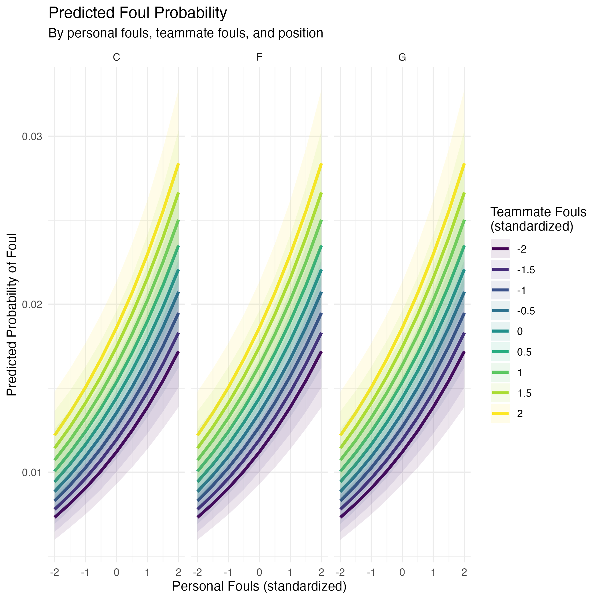
Figure 1: Personal foul effects
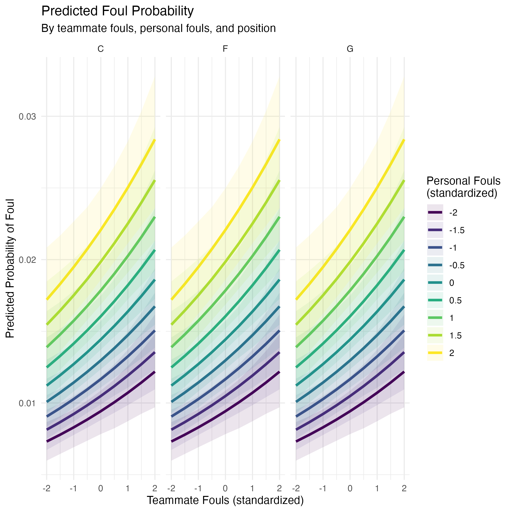
Figure 2: Teammate foul effects
3.1.2 Teammate Foul Effects
We found a significant “contagion effect” where a player’s defensive behavior is influenced by teammates’ foul accumulation. Different positions respond differently to teammate fouls, likely due to changes in defensive intensity. For example, a mediocre Center playing alongside an excellent defensive Forward might commit more fouls when that Forward must play conservatively due to foul trouble.
Our analysis reveals that premier defenders (Wembanyama, Hartenstein, Gafford) tend to negatively affect teammates’ fouling probability as they accumulate fouls, while defensive liabilities (Gilgeous-Alexander, Conley, Sharp) tend to increase teammates’ fouling probability. This suggests foul accumulation signals different defensive abilities: for weaker defenders, fouls indicate poor defense, while for elite defenders, fouls may actually indicate effective defense.
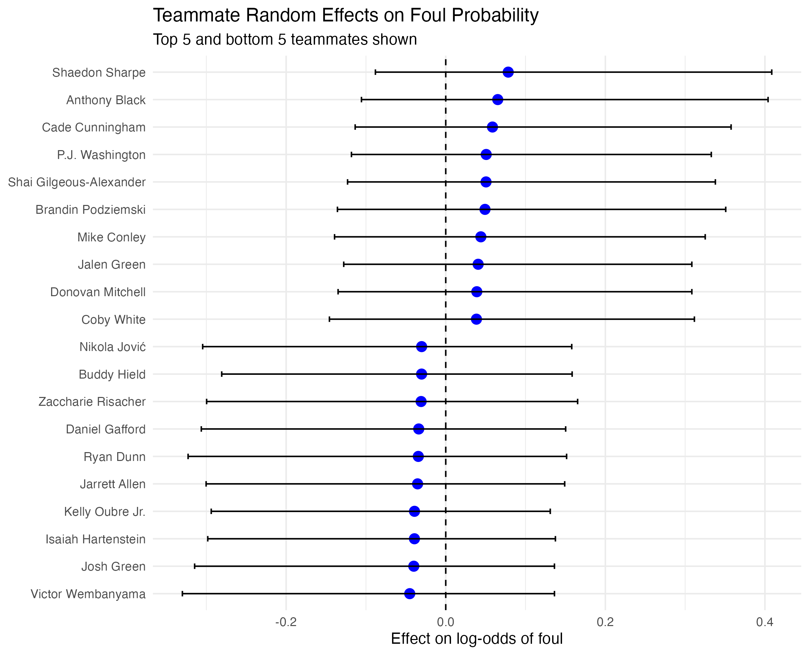
Figure 3: Teammate random effects
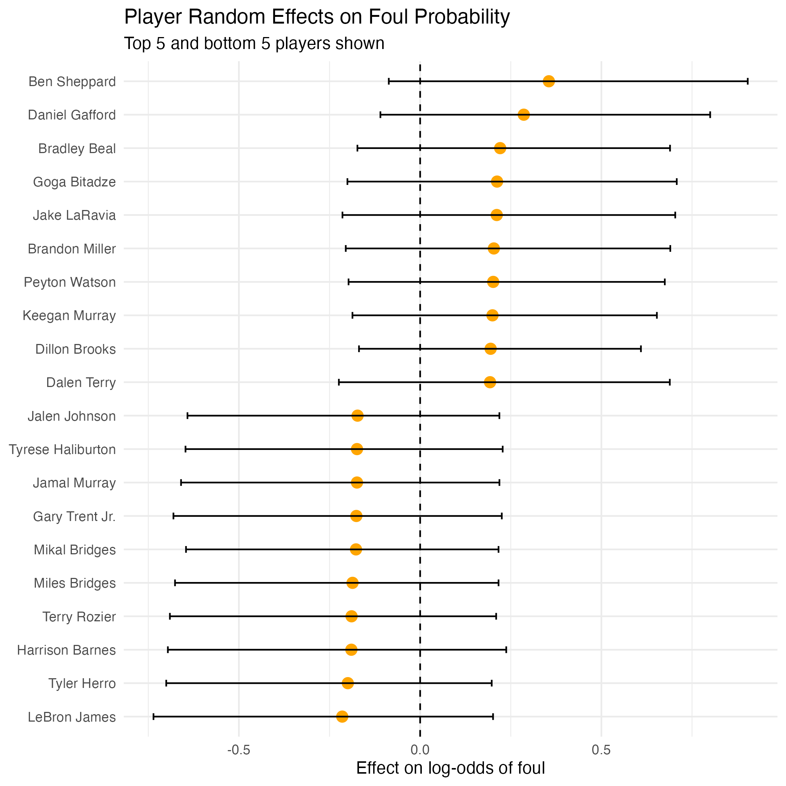
Figure 4: Player random effects
This effect can be seen at the player-level as well, where we can see the example of Daniel Gafford again, but this time at the top of the chart, where his probability of committing a foul seems to increase as his teammates (who include P.J. Washington, seen in the above figure, along with other known offensive-minded players like Kyrie Irving) accumulate fouls. Interestingly, Lebron James, who many have speculated receives a ‘favorable whistle’ from referees (i.e. they tend to call him for fewer fouls as a product of his celebrity) was estimated to be the least affected by his teammates’ accumulation of fouls.
Finally, we can look at the effects by position and team, where Phoenix’s forwards (who play alongside an extremely shallow and foul-prone rotation of Centers like Jusuf Nurkić and combo-Centers like Kevin Durant) seem to be the most affected by their teammates’ foul accumulation, while forwards on the Portland Trailblazers (who have a comically deep roation of defensive-minded centers and guards) seem to be the least affected.
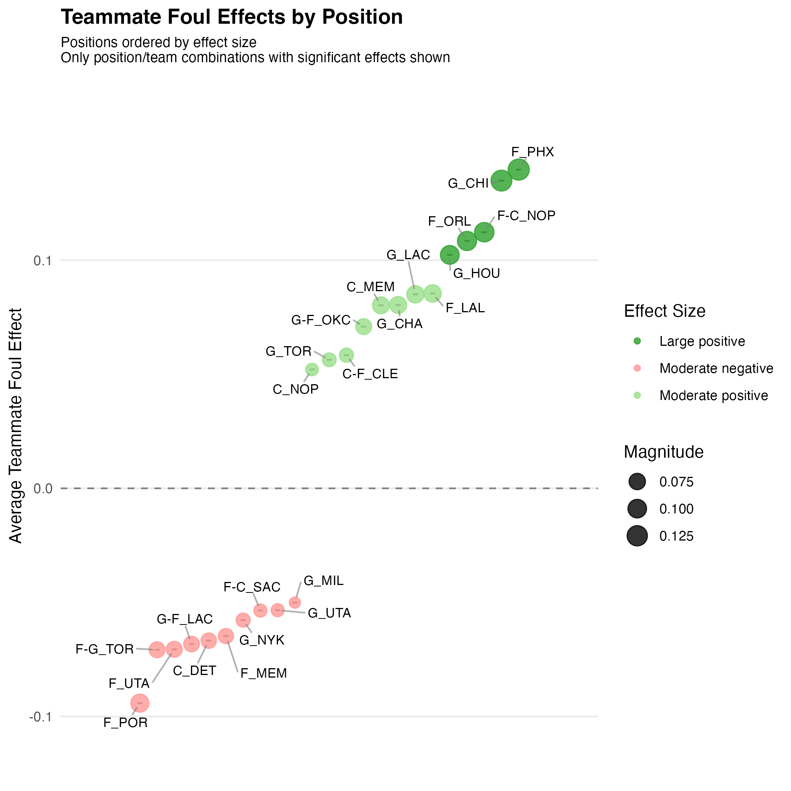
Figure 5: Team and position foul effects
3.1.3 Shot Selection Impact
Our negative binomial varying effects model demonstrated that foul accumulation affects not just the probability of committing fouls but also the types and frequency of shots opponents attempt. The model revealed substantial heterogeneity in how foul accumulation affects shot attempts across different positions and teams.
The negative binomial distribution was specifically chosen to model count data (number of shot attempts) while accounting for overdispersion, which is common in basketball shot attempt data. Our model included varying intercepts and slopes for teams and positions, allowing us to capture the hierarchical structure of the data and the heterogeneity in responses to foul accumulation.
Because we believe different players at different positions affect their team’s defensive characteristics, we can investigate, for example, how shot counts at various distances from the basket and at various levels of defensive pressure change as different positions on different teams increase or decrease their number of fouls. We accomplish this through counterfactual analysis, where we fix certain variables and manipulate others to understand their causal impact.
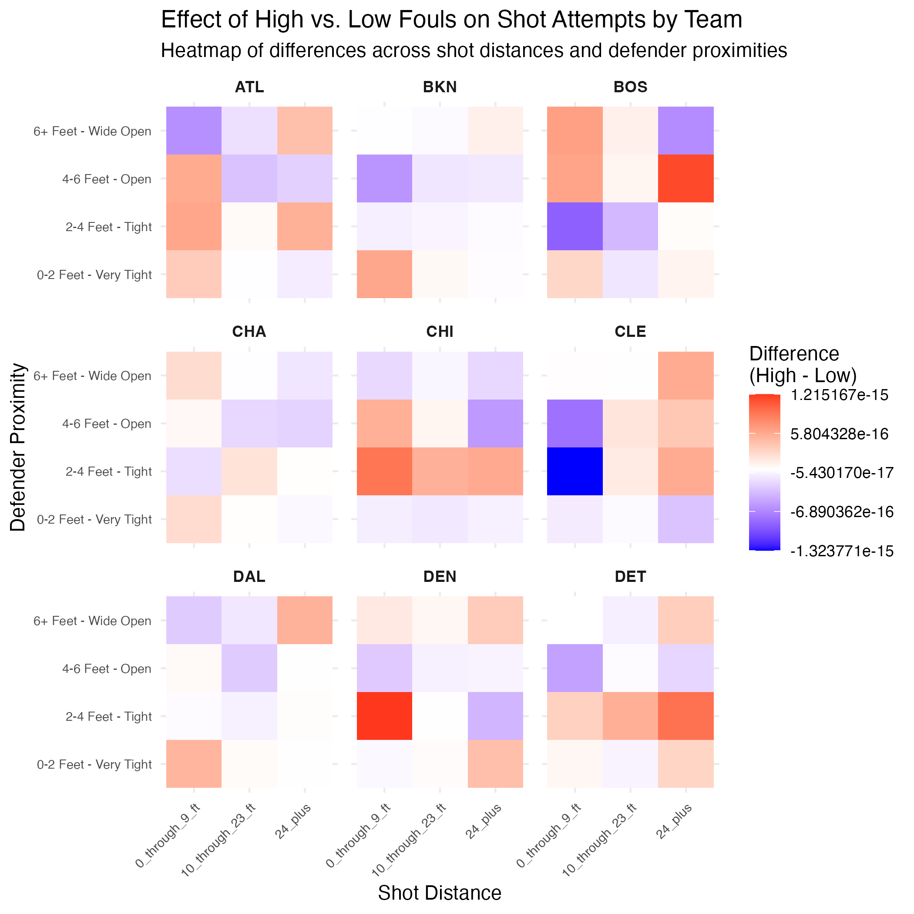
Figure 6: Center foul effects
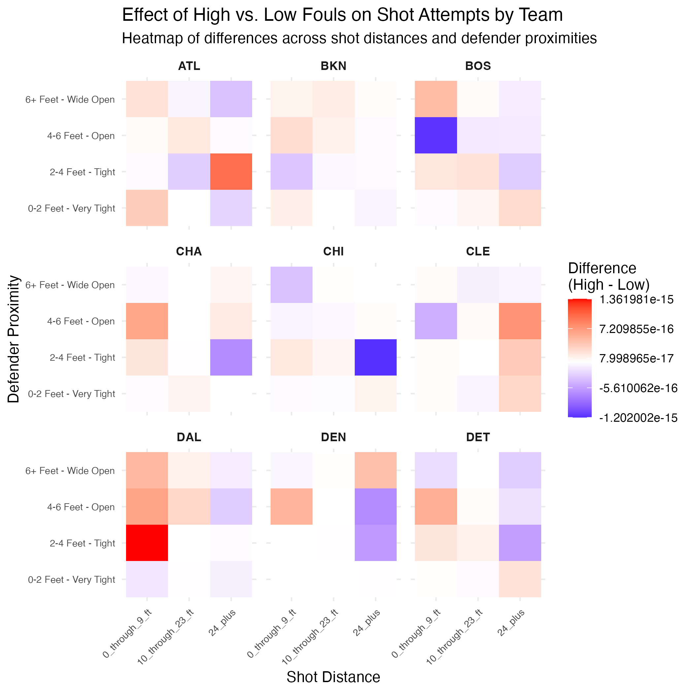
Figure 7: Guard foul effects
Here, we can see that the Denver Nuggets (DEN) are predicted to face a significant increase in the number of closely-contested shot attempts near the basket when their Centers play with a high number of fouls versus a low number of fouls. This matches our intuition about Denver, whose star center, Nicola Jokić, is known for his offensive brilliance and defensive liabilities. In contrast, shots close to the basket increase significantly when Guards on the Dallas Mavericks play with high fouls versus low fouls, suggesting different defensive dynamics across positions and teams.
3.1.4 Implications
These findings have important implications for basketball strategy and player evaluation:
Defensive impact seems to be partially understandable through the lens of foul accumulation patterns, providing a novel approach to defensive evaluation using publicly available data
Position-specific and team-specific effects highlight the importance of context when evaluating defensive performance
One-size-fits-all defensive metrics may miss important nuances in how players contribute defensively
A foul is not a foul is not a foul is not a foul. For some players, fouls may be an indicator of defensive intensity, skill, and contribution to team defense. For others, they may be a sign of poor defense and a warning sign that their teammates need to play more mindfully and adjust their defensive strategy.
3.2 Unsupervised Learning
Our hierarchical clustering analysis identified nine distinct defensive player roles in the NBA, revealing patterns that go beyond traditional position classifications. Key findings include:
3.2.1 Perimeter vs. Interior Defenders
The clustering revealed a fundamental division between perimeter and interior defenders. Clusters 1-3 represent perimeter defenders with lower defensive rebounding and block rates but higher 3-point contest rates, while clusters 5-8 represent interior defenders with the opposite characteristics. This confirms the traditional defensive dichotomy in basketball while providing more nuanced sub-classifications within each group.
3.2.2 Specialized Defensive Roles
We identified several specialized defensive roles that wouldn’t be apparent from traditional box score statistics:
Elite Rim Protectors (Cluster 5): Players like Rudy Gobert and Evan Mobley who excel at interior defense with high block rates and low opponent field goal percentages near the basket
Versatile Shot Blockers (Cluster 6): Players like Victor Wembanyama who combine shot-blocking ability with greater defensive range
Perimeter Stoppers (Cluster 1): Players like Marcus Smart who specialize in disrupting opponent 3-point attempts
Unique Defensive Specialists (Clusters 4 and 9): Players with distinctive defensive characteristics that don’t fit neatly into either perimeter or interior categories
3.2.3 Counter-Intuitive Contest Distance Finding
One of the most surprising findings was the inverse relationship between contest distance and opponent field goal percentage across all clusters. Contrary to conventional basketball wisdom, which suggests closer contests lead to worse shots, our analysis found that defenders in clusters 2 and 8 who contest shots from greater distances actually allow lower shooting percentages. This suggests these defenders may be closing out late on shots they recognize as low-percentage attempts, or that their defensive positioning forces opponents into less favorable shots despite the greater contest distance.
3.2.4 Implications for Player Evaluation
These findings have significant implications for how teams evaluate defensive talent:
The nine-cluster model provides a more nuanced framework for comparing defenders than traditional position classifications
Teams can identify players who fill specific defensive roles that complement their existing roster
The clustering reveals players with similar defensive profiles across different traditional positions, potentially identifying undervalued talent
Understanding a player’s true defensive cluster could help teams develop more effective defensive schemes tailored to their personnel
The cluster assignments of notable defenders (see Appendix C) demonstrate how this approach can identify players with similar defensive impacts despite different physical profiles or traditional positions.
4 Related work
4.1 Supervised Learning
Bayesian models have been used in a number of previous studies to model the relationship between offensive and defensive performance. Williams et al. (2024) used a Bayesian hierarchical modeling framework to model offensive performance of teams and players based on their shooting propensities and abilities. They used discretized shot loactions for the top 100 shot-takers from the 2008/2009–2020/2021 seasons to create an expected points above average (EPAA) metric. Our project differs in our use of hierarchical modeling to infer defensive impact, rahter than contributing to the existing research on offense.
Franks et al. (2015) was one of the pioneering papers in using Bayesian hierarchical models to study player tracking data by modeling the relationship between a defensive assignment and the spacial-temporal shotmaking tendencies of various offensive players, which is to say how well they shoot the ball given the location, time, and defender of a shot attempt. Our project differs in that we use a Bayesian hierarchical model to infer defensive impact without using raw player tracking data, rather than modeling the relationship between a known defensive assignment and shotmaking tendencies.
Finally, Chu and Swartz (2020) use Bayesian methods to model the time-to-event of a foul as a gamma distributed function of a player, their accumulated number of fouls, and their position. Their goal was to develop a decision-making framework for coaches to use in determining when to sit players at risk of fouling out (usually when a player reaches 6 fouls) of a game. Although similar in spirit, our project doesn’t model the time-to-event of a foul nor attempt to help coaches make decisions about sitting their players, but instead focuses on the effect of fouls while players are on the court.
4.2 Unsupervised Learning
Multiple papers have performed similar clustering techniques to help identify an NBA player’s true role, but like much other NBA research it is primarily focused on their offensive tendencies and only including box score defensive stats such as blocks and steals.
Hedquist (2022) uses k-means and hierarchical clustering to identify different roles, but uses primarily shot data such as shooting percentages for 2 points, 3 points, and free throws. It does also include blocks, steals, personal fouls, and defensive rebounds. It then goes on to group the clusters from twenty different seasons to try to identify consistent key roles.
Bosch and Kalman (2020) used probabilistic modeling cluster approach to understand what role was a player filling in a lineup and then try to predict the performance of the line-up after knowing the line-up roles. Once again these used similar features as the previous paper, but also included physical information with their height as well as their shot selection percentages.
5 Data Source
5.1 Supervised Learning
Our analysis uses a primary dataset collected from the NBA Stats API, accessed through via R using the hoopR package, which returns a json file that’s converted to an easy-to-manipulate tibble. Our analysis covers the first two-thirds of the 2024-25 NBA regular season (October 22, 2024 to February 24, 2025), comprising 856 games and 412,269 individual play-by-play records. We retrieved this data incrementally throughout the season, storing processed results in parquet files.
Significant pre-processing was required to handle data quality issues, parse events and lineups using play descriptions and event types, and identify specific game situations (like garbage time) to filter out of our sample. The codebase was built on top of the work of Ramiro Bentes, and updated to process the NBA’s current season. Key pre-processing steps included data acquisition, cleaning, time processing, score tracking, lineup tracking, possession identification, foul processing, garbage time detection, and data integration. For a detailed list of variables and processing steps, see Appendix E.
Our analysis also used secondary datasets from the NBA Stats API:
Closest Defender Shooting Dashboard: Provides player-level information about shooting performance based on the proximity of the closest defender at the time of shots.
Team Rosters: Provides information about the players on each team, including their positions and starting lineups.
These datasets were collected for the same time period as our primary dataset and processed daily to capture new games.
5.2 Unsupervised Learning
Four main datasets were used to gather information about a defensive player’s role: Play-by-play data, player defender dashboards, player season log stats on a per 100 possession basis, and player physical traits. The main challenge for the unsupervised learning was to get quality features that illustrated a player’s defensive role. Two packages were used to pull raw data from the NBA’s free API: hoopR and nba_api
6 Feature engineering
6.1 Supervised Learning Feature Engineering
Our feature engineering process transformed raw NBA play-by-play and shooting dashboard data into specialized datasets for analyzing defensive impact through foul accumulation. Because our project included two distinct classes of models (binomial and negative binomial), it required two distinct feature engineering workflows to produce compatible datasets.
For our binomial models (modeling shot outcomes), we engineered features in several categories: primary event features (e.g., foul occurrence indicators, foul counts), game context variables, team and player identifiers, and shot-specific features. For our negative binomial models, we focused on shot attempt counts, foul variables, defensive context features, and player/team attributes.
The data processing involved multiple steps including data extraction, foul identification and tracking, teammate foul extraction, standardization, filtering, position data integration, data validation, and stratified sampling. For a comprehensive list of features and detailed processing steps, see Appendix F.
6.2 Unsupervised Learning Feature Engineering
The defender dashboard from the NBA contains information about shots when a player is the defender. From this, the average distance for a defender’s shot attempt can be estimated for two-point and three-point attempts. To get a more accurate idea of a defender’s true contest, a portion of the defender’s wingspan was subtracted from this average distance. Wingspan measurements were either pulled directly from NBA combine measurements or estimated based on a player’s listed height.
Additionally, how often a player was targeted for an attempt was considered as an indication of whether opposing teams were looking for a matchup against a bad defender or avoiding a great defender. This was calculated using play-by-play data to compare all attempts that occurred when a player was in the defending lineup against the defensive dashboard stats when a player was the closest defender.
Players needed a minimum of 1,000 total possessions in a season to be included, resulting in 907 total players from the 2021-22 season to the current 2024-25 season. For a complete list of features considered and engineering details, see Appendix F.
7 Supervised Learning Methods
Our supervised learning workflow followed a Bayesian modeling approach, which emphasizes domain knowledge, causal reasoning, model building, and iterative refinement. We developed two classes of hierarchical models to analyze the relationship between foul accumulation and defensive impact in NBA games.
7.0.1 Binomial Models for Foul Occurrence
Our first class of models used a Bernoulli (single-trial binomial) distribution to model the probability of a defensive player committing a foul during a shot event. We chose this approach because:
Theoretical alignment: Fouls are discrete binary events that either occur or don’t occur on a given defensive possession
Interpretability: The logistic model provides coefficients that can be directly interpreted as changes in log-odds of committing a foul
Hierarchical structure: The nested nature of basketball data (players within teams, events within games) is naturally accommodated by a hierarchical model
This model allowed the effect of accumulated fouls to vary by player position, capturing the different defensive responsibilities and foul tendencies across positions.
7.0.2 Negative Binomial Models for Shot Attempts
Our second class of models used a negative binomial distribution to model the count of shot attempts faced by defenders as a function of their foul accumulation. We chose this approach because:
Count data modeling: Shot attempts are non-negative integer counts
Overdispersion: The negative binomial accommodates greater variance than a Poisson model
Hierarchical structure: Allows modeling of nested factors affecting shot attempts
This varying slopes model allows the effect of fouls on shot attempts to differ by team and position, capturing the heterogeneity in how foul accumulation affects defensive behavior across different contexts. For example, teams with strong defensive systems might show different patterns in how their players’ foul accumulation affects shot attempts compared to teams with weaker defensive schemes. Similarly, the effect of fouls might differ substantially between guards who defend the perimeter and centers who protect the rim.
A key aspect of our Bayesian workflow was the use of generative modeling and simulation throughout the analysis process. This approach allowed us to iteratevly develop a robust varying slopes model using simulated data that captures the heterogeneity in how foul accumulation affects defensive behavior across different teams and positions.
7.0.3 Prior Selection and Simulation
For our negative binomial varying slopes model, we carefully specified informative priors based on domain knowledge about basketball and defensive behavior. The complete prior specification can be found in Appendix D.
These priors reflect our belief that: 1. Teams and positions would show moderate variation in their baseline shot rates (intercepts) 2. The effect of fouls would vary by team and position, but within reasonable bounds 3. The correlation between intercepts and slopes would be modest (regularized by the LKJ prior) 4. The negative binomial dispersion parameter would be around 4, indicating moderate overdispersion
Before fitting our model to real data, we conducted prior predictive simulations to ensure our priors generated plausible outcomes.
7.0.4 Model Fitting and Evaluation
We fit our varying slopes model using Markov Chain Monte Carlo (MCMC) sampling with the brms package.
After fitting, we conducted extensive model diagnostics: 1. Convergence checks: Trace plots, R-hat statistics, and effective sample sizes 2. Posterior predictive checks: Comparing model-generated data to observed data 3. Parameter interpretation: Examining posterior distributions of key parameters 4. Model comparison: Using leave-one-out cross-validation (LOO) to compare models
7.0.5 Heterogeneity Across Teams and Positions
One of the key advantages of our varying slopes model is its ability to capture how the effect of fouls varies across different teams and positions. The visualizations below illustrate this heterogeneity:
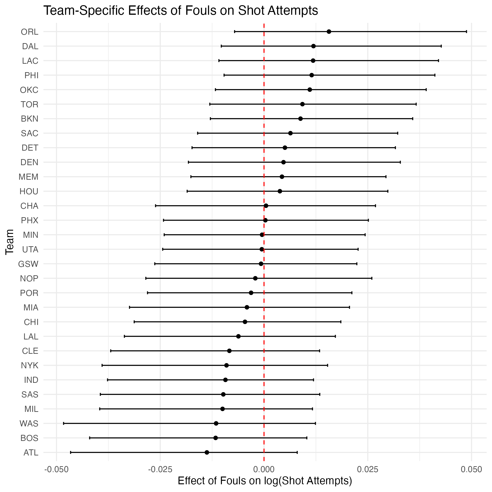
Figure 8: Team effects
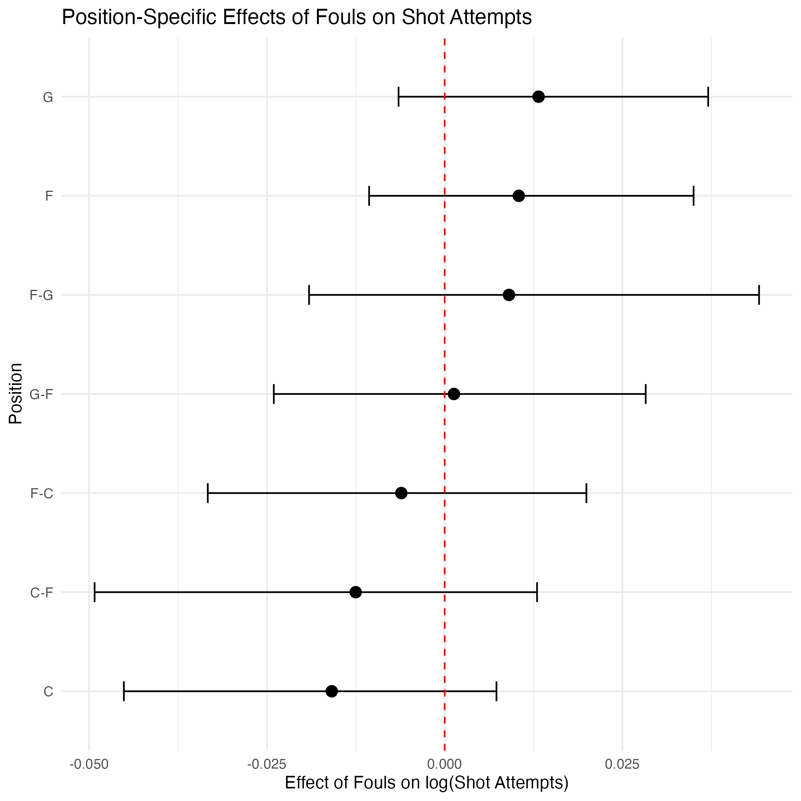
Figure 9: Position effects
These plots reveal substantial variation in how foul accumulation affects shot attempts across different teams and positions. Some teams show a positive relationship between fouls and shot attempts, suggesting that as defenders accumulate fouls, they face more shot attempts. Other teams show a negative or negligible relationship, indicating different defensive strategies or player characteristics.
7.0.6 Partial Pooling and Shrinkage
Another important feature of our hierarchical model is partial pooling, which leads to shrinkage of group-level estimates toward the population mean. This is particularly valuable for understanding position effects, where we have a small number of distinct categories but substantial variation in sample sizes.
Figure 10. reveals several important patterns. First, we see that forwards (F) experience substantial shrinkage, with their raw shot rate being the lowest but their model-estimated rate pulled significantly toward the population mean. In contrast, guard-forward hybrids (G-F) and pure guards (G) show less shrinkage, with their model estimates remaining closer to their raw rates.
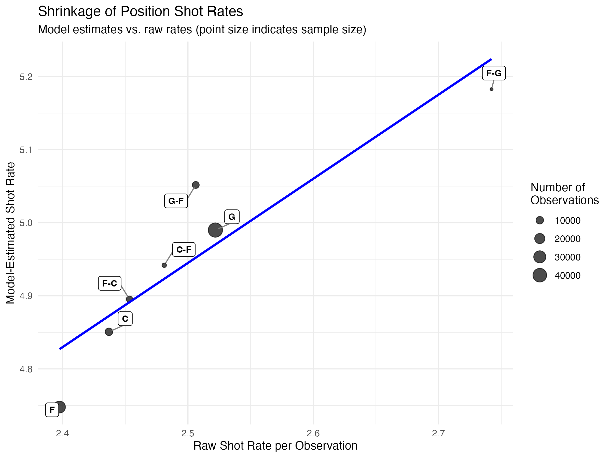
Figure 10: Position shrinkage effects
7.0.7 Counterfactual Analysis
To understand the practical implications of our model, we conducted counterfactual analyses to examine how shot patterns change under different foul scenarios. For example, we can visualize how shot counts at various distances from the basket change as different positions increase their number of fouls:
Figure 11: Center foul effects
Figure 12: Guard foul effects
These visualizations show that the Denver Nuggets (DEN) are predicted to face a significant increase in closely-contested shot attempts near the basket when their Centers play with a high number of fouls, while the Dallas Mavericks show a similar pattern when their Guards accumulate fouls. These team and position-specific patterns highlight the value of our varying slopes approach in capturing the complex relationship between foul accumulation and defensive behavior.
This simulation-based approach allowed us to: - Validate our modeling assumptions before and after fitting - Understand the practical implications of our parameter estimates - Test the robustness of our conclusions under different scenarios - Communicate results in terms of concrete basketball outcomes rather than abstract statistical parameters
8 Unsupervised Learning Methods
Agglomerative hierarchical clustering was chosen as the primary method as the overall structure of the players was key additional information. This clustering method takes a “bottom-up” approach where all values are initially viewed as individual clusters and recursively combined until they form one complete cluster. In this approach, we can get some more information too about overarching clusters of smaller sub-clusters. The ward method was chosen for the linkage method because it minimizes the variance within a cluster after merging. Single and complete would not be appropriate because it would lead to less useful merging of clusters and the dataset is small enough that the calculations for the ward method were not a concern. Average linkage was also considered but resulted in an overall higher amount of distance within cluster.
For hierarchical clustering, one of the key parameters is either the number of clusters or the distance threshold between clusters. To accomplish this, the number of clusters was iterated from 2 to 20 to see when the average distance within a cluster tapered off. This point was at nine clusters. One disadvantage of the elbow method is that it is sensitive to the selection of the maximum number of clusters. If you have a larger number for the maximum number of clusters, this causes the overall plot to zoom out and potentially lead to a larger value for the cluster count where the plot begins to taper off. Ultimately, 20 was decided as the maximum number of clusters because at this point clusters were containing less than half a percent of the sample.
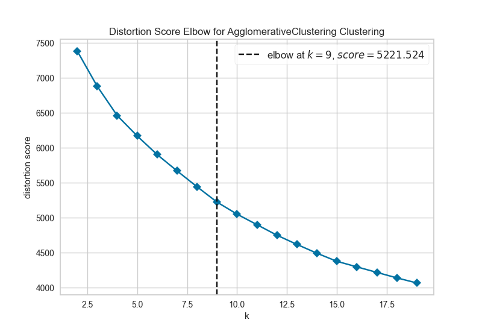
Figure 13: Elbow method for determining optimal number of clusters
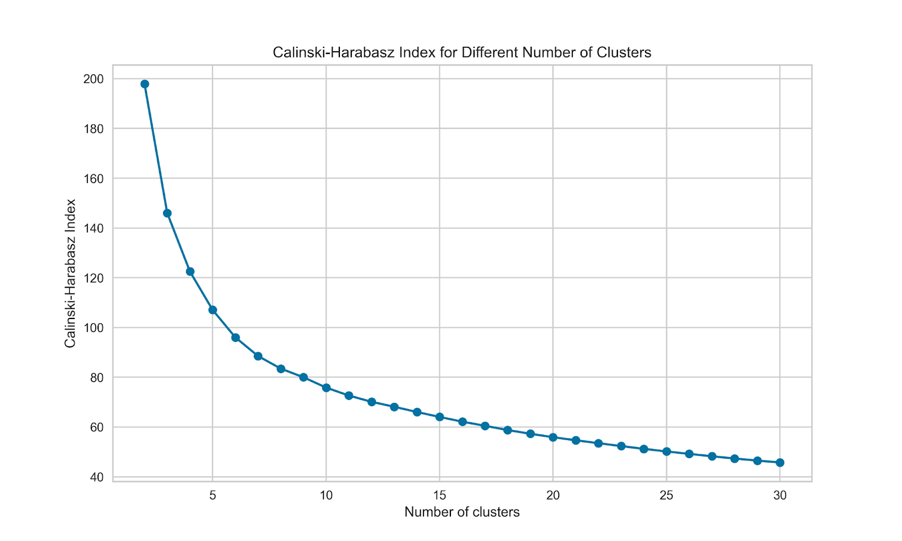
Figure 14: Cluster distribution showing percentage of players in each cluster
For context, if the max number of clusters was set to 30, where some clusters were individual data points, the suggested number of clusters would be at ten clusters. Other methods such as the Calinski-Harabasz and silhouette scores were looked at, but since these methods consider the number of clusters in their calculations and the data showed clear patterns of inside and outside defenders both methods optimized at only two clusters. Bosch and Kalman(2020) ran into a similar issue when attempting to decide the cluster for K-means clustering. Only two clusters would not show any valuable insights for a player’s defensive role, therefore the nine clusters shown by the elbow method were decided to pursue.
One of the main challenges for clustering is providing context to the results to make them understandable. To understand the main attributes of the clusters, the hierarchical clustering dendrogram and a heatmap of the scaled features are used. The dendrogram outlines the general structure and how clusters split off from one another, while the heatmap shows the defensive strengths and weaknesses for each cluster.
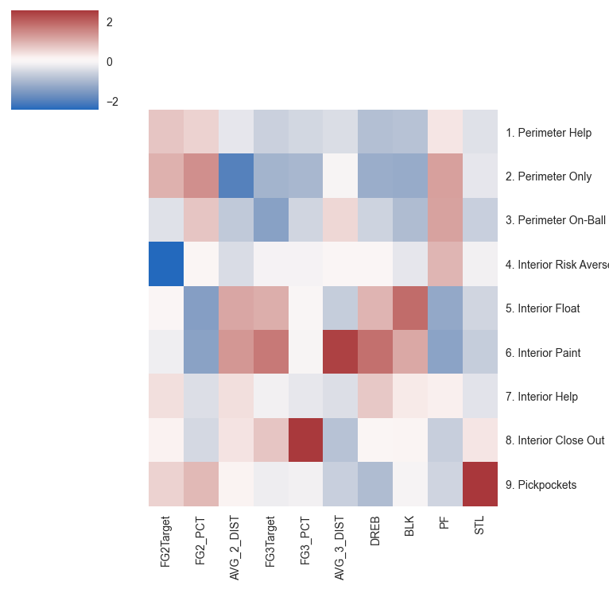
Figure 16: Heatmap of scaled features by cluster
From the dendrogram, there is a clear divide immediately between players tasked with primarily defending near the basket or the perimeter. Clusters 1 through 3 all have substantially lower defensive rebounding rates and block rates, and higher 3 point attempt rates compared to clusters 5 through 8. The two clusters that do not immediately stand out as perimeter or inside defenders are clusters 4 and 9 as they have one feature that drastically separates them.
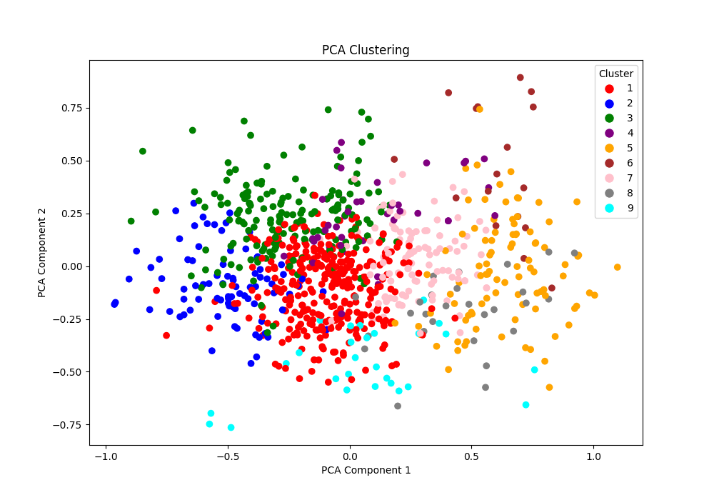
Figure 17: PCA Clusters
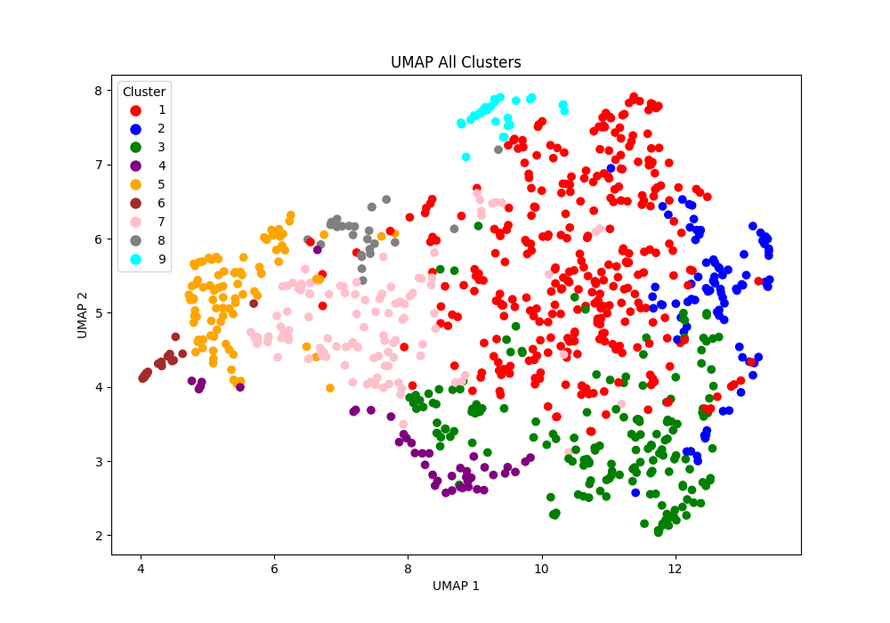
Figure 18: UMAP visualization
Figure 19: Tree structure of clustering
One of the most interesting relationships noticed was between the average contest distance of a shot and the allowed field goal percentage. Across all clusters the two features seem to be inverses of one another, completely going against the line of thinking that a close contest by a defender would lead to a worse shot. The defenders in cluster 2 and 8, these defenders might be closing on the shooter late and therefore further on average because they know it is not a great shot for the offense to take resulting in lower shot percentages.
9 Supervised Evaluation
9.1 Evaluation Metrics Justification
Our evaluation focuses on metrics aligned with Bayesian inference principles:
LOO-CV (Leave-One-Out Cross-Validation): Provides expected log predictive density (ELPD) and is preferable to alternatives like AIC/BIC for hierarchical models.
Posterior Predictive Checks: Visual assessment of how well our models generate data matching observed patterns.
MCMC Diagnostics: R-hat statistics, effective sample sizes, and trace plots to ensure computational reliability.
9.1.1 LOO-CV
After using our generative model to simulate count data that approximated our actual sample, we fit three differently-specified negative binomial models on simulated data and used Leave-one-out Cross-validation to compare their out-of-sample predictive performance. We fit each model using both constrained and unconstrained priors to improve regularization. The varying intercepts model with constrained priors outperformed the other models, and was selected for this reason as well as for its representation of the causal structure of our data.
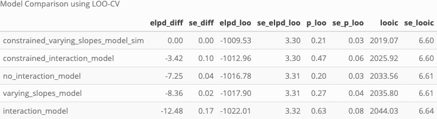
Figure 20: Negative binomial model comparison
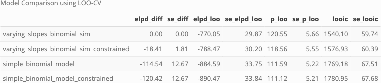
Figure 21: Binomial model comparison
We followed a similar procedure for selecting a binomial model, comparing a simple model that omitted player positions against the more complex model with varying slopes that included player positions detailed in the Methods Description. The latter model outperformed the simple version convincingly, with an ELPD difference of greater than 5.
For the model evaluation section, we’ll focus on our negative binomial model of the effect of fouls on shot-taking.
9.2 Model Evaluation
9.2.1 MCMC Diagnostics
To ensure the reliability of our Bayesian inference, we conducted thorough MCMC diagnostics. These diagnostics help verify that our sampling algorithm effectively explored the posterior distribution and produced reliable parameter estimates.
Our diagnostics showed excellent convergence across all parameters, with R-hat values consistently below 1.01, suggesting that our chains mixed well and reached the target posterior distribution. Similarly, the effective sample sizes (N_eff) were sufficiently large for all key parameters, ensuring that our posterior summaries are based on adequate independent samples. Detailed MCMC diagnostic plots can be found in Appendix G.
9.2.2 Posterior Predictive Checks
We conducted posterior predictive checks to assess how well our model captures the observed data patterns:
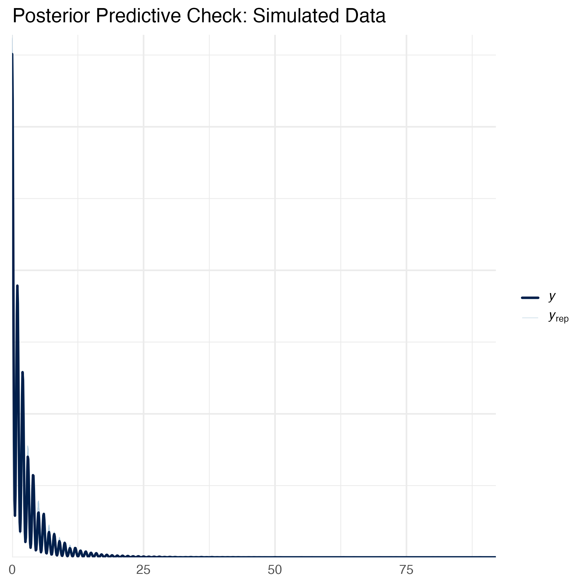
Figure 22: Posterior predictive check comparing observed vs. replicated data
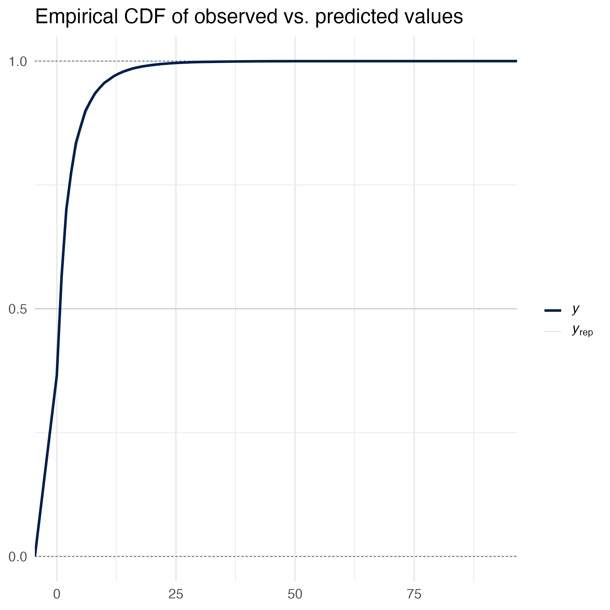
Figure 23: ECDF comparison of observed vs. predicted values
The posterior predictive check shows good alignment between the observed data (dark line) and replicated datasets from our model (light lines), indicating that our model captures the overall distribution of shot attempts well. The ECDF comparison further confirms this, showing close correspondence between the empirical cumulative distribution functions of observed and predicted values.
9.2.3 Feature Importance and Ablation
There are a variety of different ways to understand the importance of features within the nested structure of a hierarchical model. In our case, where we have observations of players nested within positions within teams within periods within games, our research interests and assumptions guide our analysis. In addition to visualizing the marginal effects of defensive teams and positions on offensive shot counts we can use counterfactual analysis to understand the causal impact of different features on shot counts.
Figure 24: Team effects on shot counts
Figure 25: Position effects on shot counts
9.2.4 Sensitivity Analysis
The model comparison table above gives indication that our model is fairly sensitive to our choice of priors, gaining significant out-of-sample predictive performance when fit with constrained versus unconstrained priors. Our model is less sensitive to whether it’s parametrized with interaction terms versus group-level varying slopes, where the difference in ELPD is less than 5; if judging our models purely on predictive performance, a model with varying slopes doesn’t seem to necessarily be preferable to one with interaction terms.
9.2.5 Failure Analysis
Our shrinkage analysis above showed that our model struggled to predict shot rates for some positions versus others (forwards, in particular).
Our negative binomial model generally performs well at predicting shot attempts faced by defenders based on their foul status, but examining specific prediction failures reveals important insights about basketball defensive dynamics that our model doesn’t fully capture. We identified three distinct categories of prediction failures, each highlighting different aspects of defensive behavior that warrant further investigation.
Three Categories of Prediction Failures
Table 1 presents three specific examples where our model’s predictions significantly deviated from observed values:
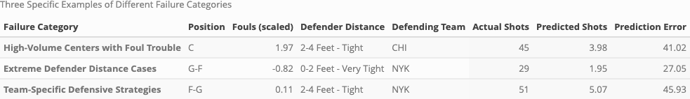
Figure 26: Failure analysis examples
9.2.5.1 1. High-Volume Centers with Foul Trouble
The first example shows a center from the Chicago Bulls with a high foul count (nearly 2 standard deviations above average) who faced 45 shot attempts while the model predicted only about 4. This dramatic underprediction reveals an important selection effect: centers who remain in games despite foul trouble are likely there specifically because of their defensive importance.
9.2.5.2 2. Extreme Defender Distance Cases
The second example features a guard-forward from the New York Knicks playing very tight defense (0-2 feet) despite having below-average fouls. The player faced 29 shot attempts while our model predicted fewer than 2. This suggests that in very tight defensive coverage situations, the relationship between fouls and defensive activity follows different patterns than our model captures.
9.2.5.3 3. Team-Specific Defensive Strategies
The third example shows another Knicks player, a forward-guard with only slightly elevated fouls, who faced 51 shot attempts compared to a prediction of just 5. This extreme underprediction, along with the previous Knicks example, suggests strong team-specific defensive strategies that aren’t fully captured by our model’s random effects structure.
9.2.5.4 Overall Insights
All three examples show massive underprediction, suggesting our model may be missing important factors that lead to high-volume shot attempts in certain situations. The magnitude of these errors (27-46 shots) indicates that in certain edge cases, the model’s predictions are far off, pointing to the need for additional variables or interaction effects to capture these extreme scenarios. That said, what we mean by “prediction failure” needs to be contextualized for heirarchical models. Our constrained priors and adaptive regulariztion of partial pooling, while improving overall predictive performance, may be contributing to the severe underprediction of high shot attempt counts.
The magnitude of our prediction errors in these extreme cases suggests that our priors may be too informative for certain regions of the parameter space, pulling predictions too strongly toward the population mean when faced with unusual combinations of predictor values.
Incorporating Selection Effects: We need to model the coach’s decision process about which players remain in games despite foul trouble, perhaps through a hierarchical structure that allows player-specific foul effects.
Non-linear Relationships: The extreme defender distance case suggests non-linear relationships between fouls, defender proximity, and shot attempts that could be captured through interaction terms or non-linear functional forms.
Team-Specific Tactical Responses: The Knicks examples point to the need for more complex team-level random effects that can capture team-specific defensive schemes and responses to foul situations.
Game Context Variables: Incorporate score differential, time remaining, and playoff vs. regular season indicators to capture situational defensive adjustments that might explain when coaches keep certain players in despite foul trouble.
Offensive Style Predictors: Include measures of the offensive team’s style and tendencies to account for how different offensive approaches might exploit or target defenders in foul trouble.
Multilevel Measurement Error Models: We could model the uncertainty in our foul counts and defender proximity measures, particularly for players with small sample sizes.
10 Discussion
10.1 Supervised Learning
This was the largest and most complex project we’ve attempted to complete using a Bayesian workflow. We learned that organizing and keeping track of the various stages of model specification (generative, statistical, computational), prior specification, testing, model fitting, etc. is a major challenge. The benefits to organizing a Bayesian workflow well are myriad, however, and made the process of model evaluation straightforward.
This was also far and away the largest amount of data we’ve worked with, and unsurprisingly the computational demands of full Bayesian inference provided many excellent learning opportunities. We learned that without variational inference, downsampling is a requirement in order to fit Bayesian models on a deadline.
We were surprised by how well our negative binomial model seems to have learned important characteristics of specific teams, and the defensive liabilities of individual positions thereon.
10.2 Unsupervised Learning
Including player tracking data would assist in defining a player’s true defensive role. A current limitation in this project is that there is no information on a player’s defensive role if they were not the closest defender on a shot. As demonstrated in the supervised learning portion, defense in basketball closer represents a network of the five players where all of their actions have an effect on the other members. For example, if one player did a poor job defending a driving defender and allowed them to get to the paint for a layup, this shot may be attributed to the center who went to contest late and show nothing for the initial defender. Player tracking data would be able to show what a player is doing throughout a play in ways that the defensive dashboard information does not provide.
Another avenue for future work is using these defensive clusters to expand on existing work with a player’s offensive role. This would allow for a player to have two-identities specific to each side of the court. Then using the combination of all roles on the court, attempt to predict one lineup’s success when matched to another.
11 Ethical Considerations
The main ethical consideration of this project is providing a fair representation of players. With the limitations of the defensive data available, a player’s defensive impact when not the primary defender is unable to be accurately measured. It is important to ensure labels, whether from clustering or as the product of supervised learning, refrain from subjective language so that a player is not labeled either a “liability” or an “elite defender”. Adding subjective language to clusters could affect the perception of a player’s ability unfairly.
12 Statement of Work
Michael Light: Supervised Learning, Initial play-by-play, and defender dashboard data pulls in R, Report Writing
Quinten Adabie: Unsupervised Learning, Machine Learning Pipeline, Player Info, and Physical data pulls, Report Writing
13 Appendices
13.1 Appendix A.
13.1.1 References
Hedquist, Alexander L., “Redefining NBA Basketball Positions Through Visualization and Mega-Cluster Analysis” (2022). All Graduate Theses and Dissertations. 8602. https://digitalcommons.usu.edu/etd/8602
Kalman, S. and J. Bosch (2020). NBA Lineup Analysis on Clustered Player Tendencies: A New Approach to the Positions of Basketball & Modeling Lineup Efficiency. MIT Sloan Sports Conference. https://www.sloansportsconference.com/research-papers/nba-lineup-analysis-on-clustered-player-tendencies-a-new-approach-to-thepositions-of-basketball-modeling-lineup-efficiency.
Levin, J. (2014, May 16). The absurd, amazing wingspans of professional basketball players. Slate Magazine. https://slate.com/culture/2014/05/nba-wingspans-forget-height-basketball-players-wingspans-are-absurd-and-amazing.html
13.3.1 Cluster Assignments for Selected NBA Players
Player
Season
Cluster
Gobert
2023-24
5
Jaren Jackson Jr.
2022-23
7
Marcus Smart
2021-22
1
Evan Mobley
2024-25
5
Jaren Jackson Jr.
2024-24
5
Victor Wembanyama
2024-25
6
13.4 Appendix D.
13.4.1 Negative Binomial Model Prior Specification
The following code shows the complete prior specification for our negative binomial varying slopes model:
constrained_varying_slopes_priors <-c(# Population-level effectsprior(normal(1.6, 0.5), class ="Intercept"),prior(normal(0, 0.2), class ="b", coef ="fouls_scaled"),# Team-level varying effectsprior(exponential(4), class ="sd", group ="slug_team_def"),prior(exponential(4), class ="sd", group ="slug_team_def", coef ="fouls_scaled"),prior(lkj(5), class ="cor", group ="slug_team_def"),# Position-level varying effectsprior(exponential(4), class ="sd", group ="position"),prior(exponential(4), class ="sd", group ="position", coef ="fouls_scaled"),prior(lkj(5), class ="cor", group ="position"),# Other random effectsprior(exponential(4), class ="sd", group ="offender_shot_dist_range"),prior(exponential(4), class ="sd", group ="close_def_dist_range"),# Negative binomial dispersion parameterprior(gamma(3, 0.5), class ="shape") )
These priors were carefully chosen based on domain knowledge. The normal prior on the intercept centers around log(5) ≈ 1.6, reflecting our expectation of about 5 shots per observation. The exponential priors on standard deviations and LKJ prior on correlations provide regularization to prevent overfitting while still allowing the model to learn meaningful patterns from the data.
13.5 Appendix E.
13.5.1 Detailed Data Source Variables
13.5.1.1 Primary Play-by-Play Dataset Variables
Game information: game_id, league, period, event_num, clock
Play details: description, event_type, event_action_type
Team information: team_id, offense_team_id
Player information: player1_id, player2_id, player3_id all corresponded to players directly involved in a a given game event
PLAYER_ID, PLAYER_NAME_LAST_FIRST: Identifies the offensive player taking the shot
CLOSE_DEF_DIST_RANGE: Categories of defender proximity (e.g., “0-2 Feet - Very Tight”, “2-4 Feet - Tight”)
FGM, FGA, FG_PCT: Field goals made, attempted, and percentage for all shots
FG2M, FG2A, FG2_PCT: Field goals made, attempted, and percentage for 2-point shots
FG3M, FG3A, FG3_PCT: Field goals made, attempted, and percentage for 3-point shots
EFG_PCT: Effective field goal percentage, which adjusts for the higher value of 3-point shots
FGA_FREQUENCY, FG2A_FREQUENCY, FG3A_FREQUENCY: Frequency of shot attempts by type
date, period: Game date and period (quarter) when shots occurred (engineered in order to facilitate joining with pbp data)
G, GP: Game indicators for filtering single-game data
13.6 Appendix F.
13.6.1 Detailed Feature Engineering
13.6.1.1 Binomial Models Features
13.6.1.1.1 Primary event features:
personal_foul_occurance_on_player: Binary indicator (0/1) of whether a player committed a foul on a given play
personal_fouls_during_event: Count of fouls a player had accumulated prior to a given event
personal_fouls_scaled: Standardized version of personal fouls (mean 0, SD 1)
teammate_fouls: Count of fouls accumulated by each teammate of a given player on the court
teammate_fouls_scaled: Standardized version of teammate fouls (mean 0, SD 1)
13.6.1.1.2 Game context variables:
game_id: Unique identifier for each game
period: Game quarter (1-6, including overtime)
number_event: Sequential event number within a game
event_id: Unique identifier for each event
garbage_time: Binary indicator for non-competitive game situations (filtered out)
13.6.1.1.3 Team and player identifiers:
slug_team: Team abbreviation for the defensive team
slug_opp: Team abbreviation for the offensive team
player_name: Name of the defensive player
teammate_name: Name of teammate on court
player_id: NBA player ID (joined from roster data)
position: Player’s position (G, F, C, or combinations)
13.6.1.1.4 Shot-specific features:
description: Text description of the play event
13.6.1.1.5 Data processing steps:
Initial data extraction: We retrieved play-by-play data from the NBA Stats API using the hoopR package, covering 856 games from October 2024 to February 2025.
Foul identification: We processed play descriptions to identify personal fouls, excluding technical fouls, and linked them to specific players.
Foul accumulation tracking: We calculated running counts of fouls for each player throughout games, creating the personal_fouls_during_event feature.
Teammate foul extraction: For each player-event combination, we identified all teammates on court and their accumulated foul counts.
Standardization: We scaled numerical predictors (personal and teammate fouls) to have mean 0 and standard deviation 1 to improve model convergence.
Filtering: We removed garbage time plays and focused only on defensive possessions where a shot was attempted or a shooting foul occurred.
Position data integration: We joined player position information from roster data to enable position-specific analysis.
Data validation: We excluded games with incomplete tracking data to ensure consistency in our analysis.
Stratified sampling: Due to the large dataset size and rarity of fouls (~3% of defensive possessions), we created a stratified sample preserving the distribution of fouls across games, periods, teams, and player foul situations.
13.6.1.2 Negative Binomial Models Features
13.6.1.2.1 Key Features Created:
Shot Attempt Counts: Aggregated number of shots taken by offensive players while given defenders were on the court
Foul Variables:
defender_foul_count: Number of fouls accumulated by defender
Data Integration: Combined play-by-play data with defender dashboard metrics
Foul Tracking: Calculated running counts of fouls for each defender throughout games
Shot Categorization: Classified shots by distance from basket and defender proximity
Aggregation: Created count data at defender-shooter-shot type level
Standardization: Scaled numerical predictors to improve model convergence
Quality Control: Removed games with either incomplete tracking data or in which players with missing position data played
13.6.1.3 Unsupervised Learning Features
13.6.1.3.1 Features Created and Considered:
Average contest distance for two-point and three-point attempts
Adjusted contest distance (accounting for wingspan)
Target rate (how often a player was the primary defender)
Possessions per game
Player height and wingspan
Ratio of two-point to three-point shot attempts
Difference between allowed field goal percentage and team average
Defensive rebounding rate
Block rate
Steal rate
Personal foul rate
Field goal percentage allowed (by shot distance)
13.6.1.3.2 Feature Engineering Steps:
Wingspan Adjustment: For contest distance, a portion of the defender’s wingspan was subtracted to get a more accurate representation of defensive coverage
Target Rate Calculation: Compared total attempts when a player was in the defending lineup to instances when they were the closest defender
Normalization: Features were used on a per-100-possession basis to equally represent players with different playing times
Outlier Handling: Players with extremely low or high three-point shooting percentages allowed (due to small sample sizes) were adjusted to the average
Filtering: Required a minimum of 1,000 total possessions in a season for inclusion
13.7 Appendix G.
13.7.1 MCMC Diagnostic Plots
The following diagnostic plots were used to assess the convergence and reliability of our Bayesian models:
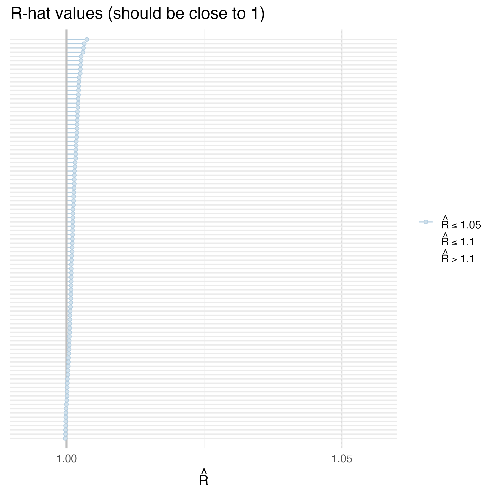
R-hat values showing convergence across parameters
The R-hat values consistently below 1.01 indicate excellent convergence across all parameters, suggesting that our chains mixed well and reached the target posterior distribution.
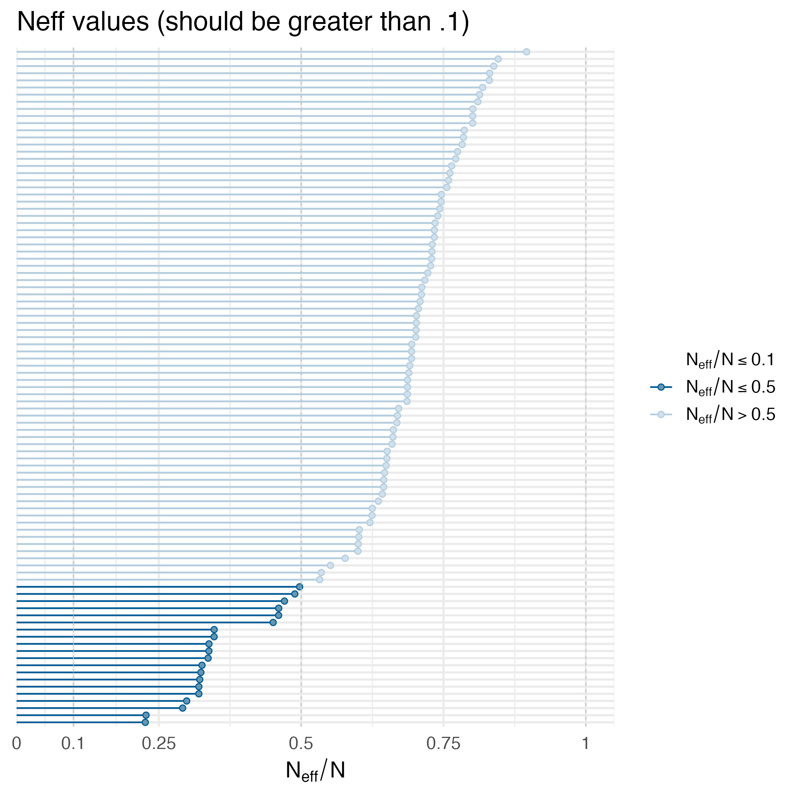
Effective sample sizes for key parameters
The effective sample sizes (N_eff) are sufficiently large for all key parameters, ensuring that our posterior summaries are based on adequate independent samples.
Trace plots (not shown here) further confirmed good mixing of the chains, with no signs of pathological behavior such as stickiness or trending.